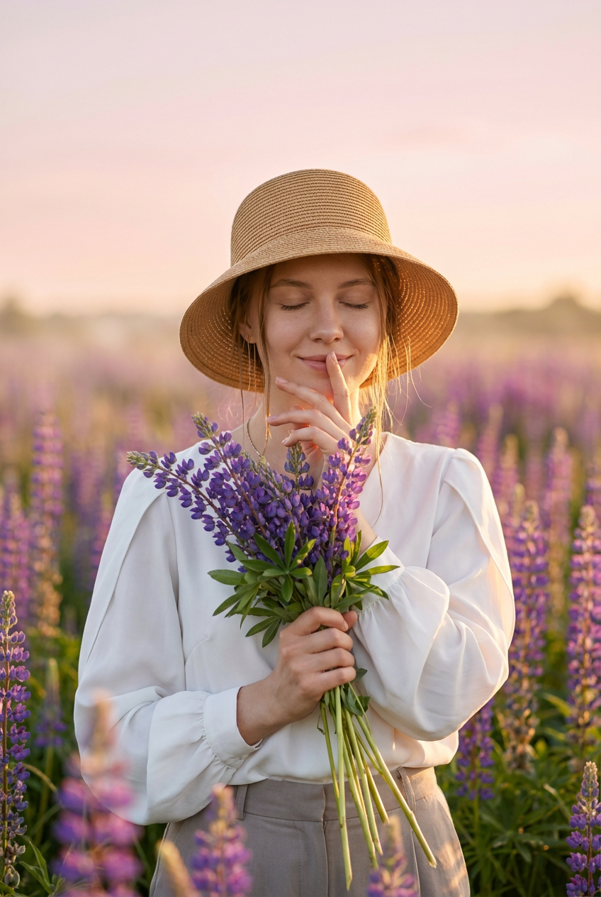
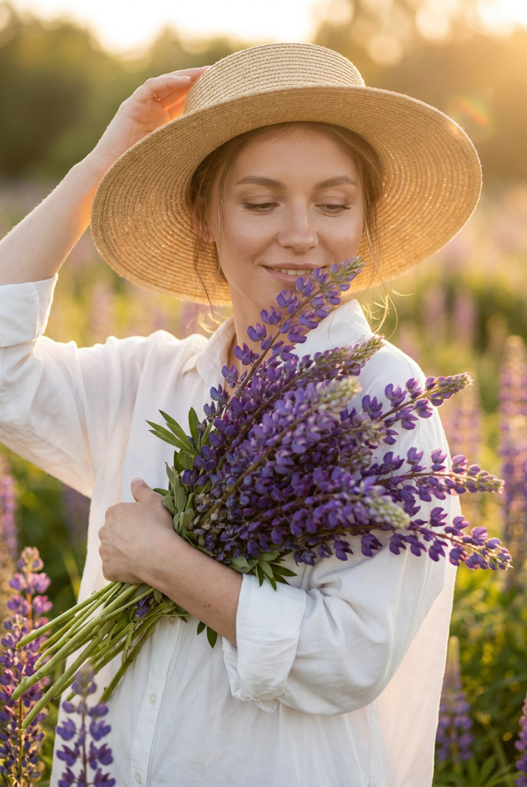
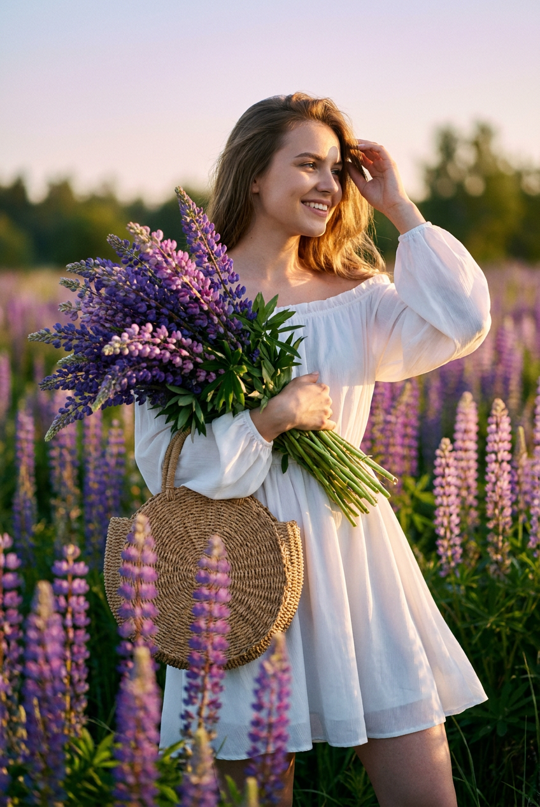
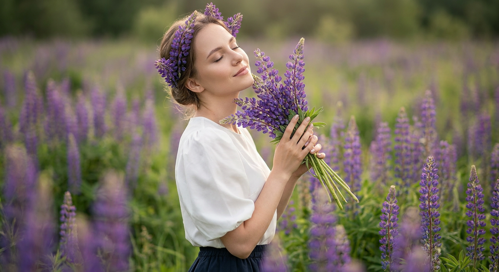
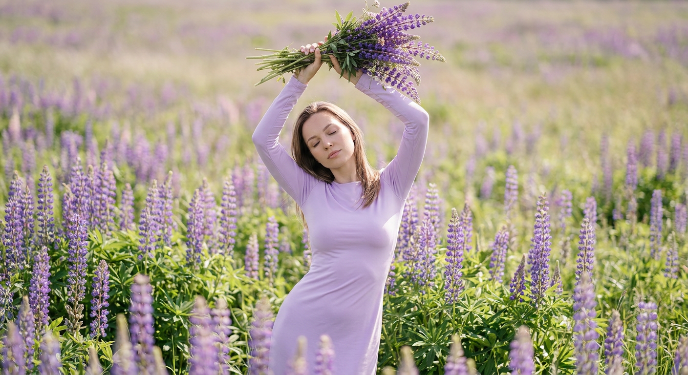
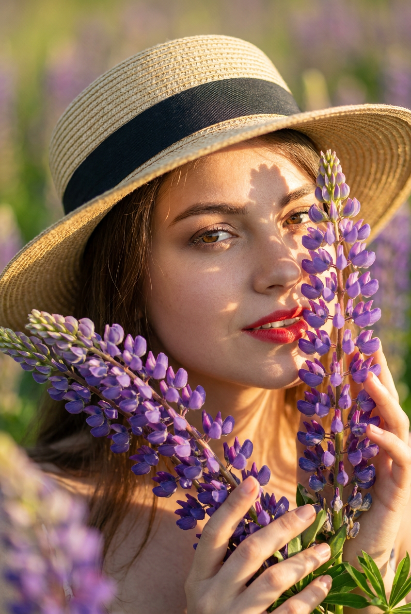
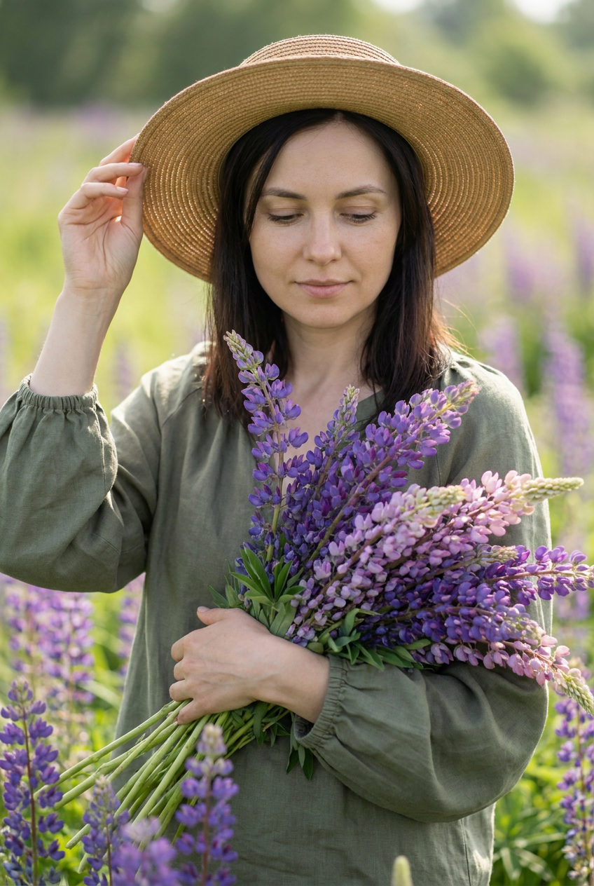
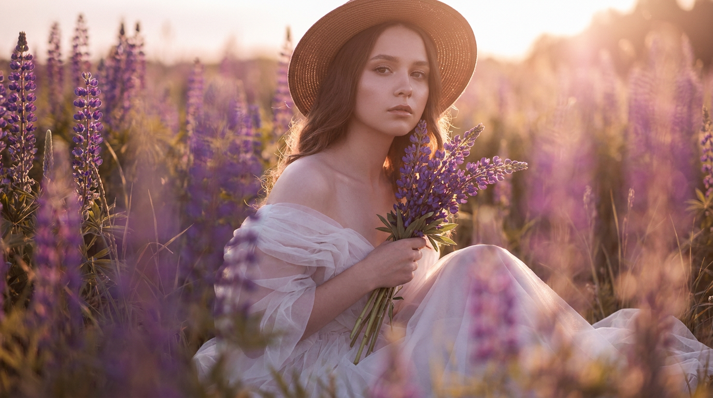
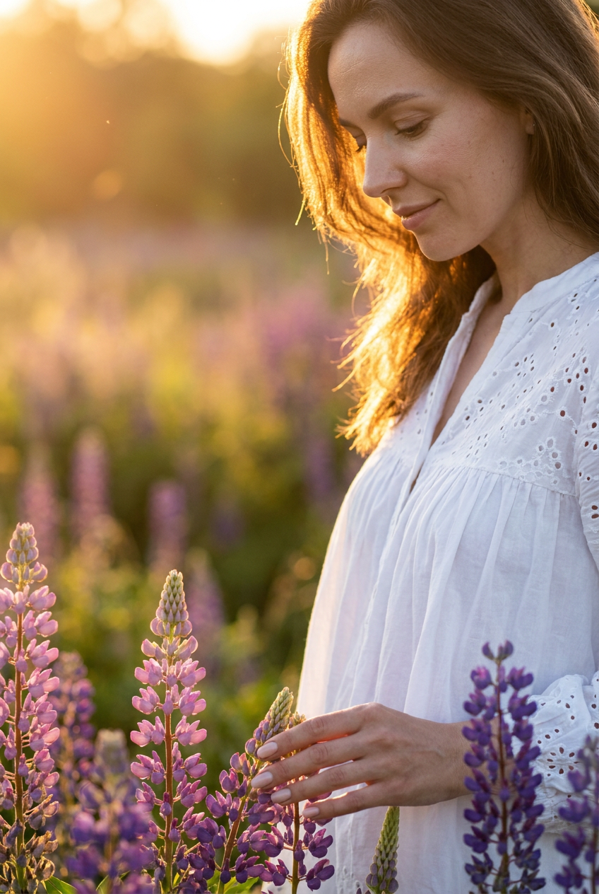
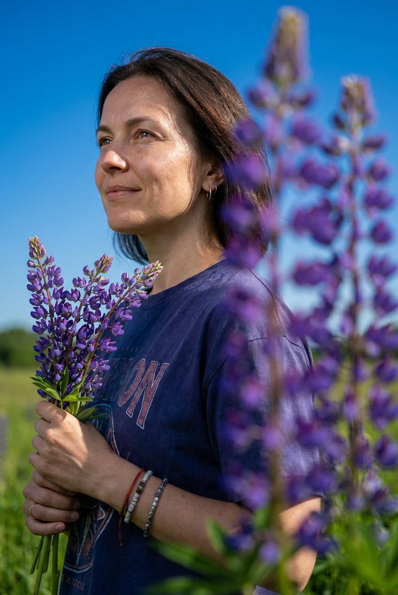

ИИ-фотосессия с люпинами: 10 промптов для нейросети

Красивый кадр в цветущем поле сложно снять случайно: мешают ветер, неловкая поза, резкий свет и толпа людей в популярной локации. Генерация помогает собрать нужную сцену заранее — от густого моря люпинов до точного положения рук и мягкой улыбки.
В подборке — 10 сценариев для ИИ-фотосессии: портреты крупным планом, кадры в полный рост, съёмка в профиль, романтичные образы с букетом, шляпой или цветами в волосах. Подставьте свой референс лица и при необходимости уточните формат кадра.
Как сгенерировать такое фото: пошагово
Нужен снимок анфас при ровном свете, лицо в кадре целиком, без тёмных очков и головных уборов. Разрешение от 1000 пикселей по короткой стороне. Чем чётче исходник, тем точнее модель повторит черты.
Выберите сценарий ниже и нажмите «Копировать» — текст уйдёт в буфер целиком, вместе с командой сохранения внешности. Эта команда стоит первой строкой и отвечает за то, чтобы на выходе было ваше лицо, а не случайное.
Кнопка «Сгенерировать» рядом с каждым промптом открывает модель в новой вкладке. Nano Banana Pro работает с референсом лица — в отличие от моделей, которые генерируют портрет с нуля и узнаваемость теряют.
Промпт — в поле ввода, портрет — через загрузку референса. Порядок значения не имеет, но без референса команда сохранения внешности работать не будет: модели нечего сохранять.
Для сторис и ленты берите 9:16, для превью и обложек — 4:3. Первый результат редко идеален: если поза или свет ушли не туда, поправьте соответствующую часть промпта и запустите заново. Обычно хватает двух-трёх итераций.
10 промптов для генерации
1. Тишина среди люпинов
Строго сохранить внешность по загруженному референсу: черты лица, пропорции, мимику и текстуру кожи без изменений. Создай фотореалистичную кинематографичную фотографию в вертикальном формате, средний или общий план. Молодая девушка стоит в центре поля, чуть ниже середины кадра, а вокруг неё со всех сторон тянутся фиолетовые колосовидные люпины. Густые соцветия на переднем плане создают эффект моря цветов и выразительную перспективу. На девушке соломенная шляпа-клош с широкими полями, тёплый бежево-медовый оттенок; из-под неё выбиваются пряди волос. Глаза закрыты, лицо расслабленное, на губах мягкая улыбка. Одну руку она подносит к губам или лицу в жесте тихого размышления, пальцы собраны аккуратно. В другой руке — небольшой букет фиолетовых люпинов с зелёными листьями и длинными стеблями. Сохрани естественную кожу, реалистичный свет и пропорции, без пластиковой ретуши.
2. Букет у груди

Строго сохранить внешность по загруженному референсу: черты лица, пропорции, мимику и текстуру кожи без изменений. Сделай фотореалистичный кинематографичный летний fashion-портрет в вертикальном кадре. Молодая женщина находится в центре цветущего сада или поля, передний план заполнен фиолетовыми люпинами. Голова слегка опущена, взгляд направлен вниз, глаза полузакрыты, выражение спокойное, с лёгкой улыбкой. Одной рукой модель касается края или ленты соломенной шляпы, будто поправляет её, второй удерживает у груди объёмный букет люпинов. Из-под головного убора видны отдельные пряди волос. Макияж аккуратный: выразительные брови, мягкие тени, естественная кожа с тонкой фактурой, губы покрыты розовато-нюдовой помадой. Сохрани точные индивидуальные черты лица по загруженному референсу, натуральную мимику и пропорции. Используй мягкий дневной свет, реалистичную глубину резкости и без эффекта пластика.
3. Поворот к солнцу

Строго сохранить внешность по загруженному референсу: черты лица, пропорции, мимику и текстуру кожи без изменений. Сгенерируй вертикальную фотореалистичную кинематографичную сцену в поле с фиолетовыми и розово-фиолетовыми люпинами. Девушка стоит на переднем плане в центре или немного правее, а за ней уходит вдаль яркая линия растений, создавая глубокую перспективу. Поза поворотная, 3/4 профиль: лицо обращено вправо, взгляд направлен в сторону, на лице лёгкая улыбка. Правая рука прижимает к груди большой пышный букет, поднятый вверх и занимающий значительную часть левой стороны кадра. В цветах смешаны оттенки фиолетового и розового, хорошо видны зелёные листья и стебли. Левая рука поднята к виску, пальцы поправляют волосы. Передай естественную форму кистей и ногтей, мягкий солнечный свет и живую фактуру кожи. Черты лица точно повторяют загруженный референс.
4. Люпины в волосах

Строго сохранить внешность по загруженному референсу: черты лица, пропорции, мимику и текстуру кожи без изменений. Создай фотореалистичный портрет в эстетике мягкой весенней фотосессии. Девушка стоит среди цветущего поля в профильном или 3/4 ракурсе, голова чуть откинута назад и повернута к цветам. Глаза закрыты, выражение расслабленное, губы складываются в едва заметную улыбку. На висках и над лбом аккуратно размещены фиолетовые колосовидные соцветия люпина, словно нежное украшение в волосах. В руках девушка держит веточку: цветы находятся рядом с лицом, часть соцветий направлена вверх, пальцы бережно поддерживают стебель. Ногти ухоженные, маникюр нейтральный. Одежда — светлая белая блуза или платье с короткими рукавами и объёмным рукавом, собранным мягкой драпировкой; ткань матовая и воздушная. Сохрани лицо по референсу, натуральную кожу, тонкий дневной свет и реалистичную композицию.
5. Букет над головой

Строго сохранить внешность по загруженному референсу: черты лица, пропорции, мимику и текстуру кожи без изменений. Сделай вертикальную кинематографичную фотографию в полный рост: девушка стоит в поле, густо заросшем фиолетовыми люпинами с зелёными листьями. Она находится по центру, корпус слегка наклонён вперёд, обе руки подняты над головой. В верхней части кадра модель держит компактный букет люпинов и полевых трав: соцветия направлены в разные стороны, видны стебли и зелень, букет выглядит свежим, плотным и собранным вручную. На девушке нежно-лавандовое или сиреневое платье с длинными рукавами и облегающим силуэтом. Гладкая матовая ткань мягко драпируется по талии и бёдрам, без сильного блеска. Лицо спокойное: глаза закрыты или полузакрыты, губы мягко сомкнуты. Повтори индивидуальные черты лица по загруженному референсу, сохрани естественные пропорции, натуральный дневной свет и реалистичную фактуру изображения.
6. Портрет сквозь цветы

Строго сохранить внешность по загруженному референсу: черты лица, пропорции, мимику и текстуру кожи без изменений. Сгенерируй тесный фотореалистичный крупный план молодой женщины в цветочном поле, вертикальная композиция. Лицо и верх плеч находятся в правой половине кадра, а на переднем плане очень близко к объективу расположены крупные фиолетовые соцветия люпина; часть цветов мягко перекрывает лицо. Женщина смотрит прямо в камеру спокойным уверенным взглядом, губы слегка сомкнуты, выражение дополнено естественной полуулыбкой. На голове соломенная шляпа с широкими полями и чёрной лентой вокруг тульи, из-под полей выбиваются пряди волос. Макияж натуральный, но выразительный: подчёркнутые глаза и яркая красная или бордовая помада. Руками модель удерживает стебли так, чтобы цветы оказались рядом с лицом и в переднем плане. Фон — размытая зелень и цветы с мягким боке. Точно передай черты лица по референсу и реалистичную текстуру кожи.
7. Задумчивый летний портрет

Строго сохранить внешность по загруженному референсу: черты лица, пропорции, мимику и текстуру кожи без изменений. Создай вертикальный фотореалистичный кинематографичный портрет в среднем плане. Женщина стоит среди густого поля фиолетовых люпинов с зелёными стеблями, её фигура расположена по центру или немного правее, а фон растворяется в сильном цветочном боке. Взгляд опущен вниз, губы слегка сомкнуты, выражение лица мягкое, спокойное и задумчивое. Волосы разделены пробором ближе к центру или немного сбоку. На шее — тонкая цепочка с маленьким деликатным украшением. На голове светло-бежевая или золотистая соломенная шляпа с заметной фактурой плетения; широкие поля дают мягкую тень на лице. Используй естественный макияж, аккуратные брови, ровный живой тон кожи и нейтральный бальзам на губах. Сохрани индивидуальность лица по загруженному референсу, натуральные пропорции и мягкий солнечный свет.
8. Воздушное платье в поле

Строго сохранить внешность по загруженному референсу: черты лица, пропорции, мимику и текстуру кожи без изменений. Сделай фотореалистичную кинематографичную сцену в горизонтальном формате, средний план. Молодая девушка сидит в зарослях фиолетовых колосовидных люпинов, её положение — ближе к центру и немного справа. Камера видит модель в 3/4 ракурсе, взгляд направлен в сторону объектива, выражение лица спокойное, мягкое и задумчивое. Глаза выразительные, губы нейтрального оттенка, кожа естественная. На голове коричневато-бежевая соломенная или тканевая шляпа с полями; волосы аккуратно уложены, отдельные пряди видны у шеи и из-под головного убора. На девушке белое полупрозрачное платье из тюля или другой воздушной ткани с лёгкой драпировкой. Плечи слегка открыты, рукава и верх наряда выглядят мягкими, почти невесомыми. Передай естественную текстуру материала, живые цветы на переднем плане и точное сходство с загруженным референсом.
9. Золотой контур на закате

Строго сохранить внешность по загруженному референсу: черты лица, пропорции, мимику и текстуру кожи без изменений. Сгенерируй фотореалистичный портрет девушки в цветущем поле, вертикальная композиция. Модель расположена справа, снята в профиль или лёгком 3/4 ракурсе, голова немного опущена. Она смотрит мягко и задумчиво, с едва заметной улыбкой. Одна рука опущена и касается кончиков фиолетовых соцветий в нижней части кадра; пальцы аккуратные, ногти покрыты светлым нюдовым лаком. По волосам проходит тёплый контровой солнечный свет, создающий золотистую подсветку по контуру и добавляющий объём. На девушке белое лёгкое платье свободного кроя с деликатной текстурой и вышивкой в виде ажурных точек или перфорации; ткань образует мягкие складки. Макияж естественный, кожа реалистичная, без пластиковой гладкости. Фон наполнен люпинами и мягким солнечным сиянием. Черты лица точно соответствуют загруженному референсу.
10. Синяя футболка и люпины

Строго сохранить внешность по загруженному референсу: черты лица, пропорции, мимику и текстуру кожи без изменений. Создай вертикальный фотореалистичный кинематографичный портрет женщины на фоне поля с фиолетовыми люпинами. Съёмка проходит на открытом воздухе в ясный солнечный день: глубокое синее небо, яркий прямой свет, чистые цвета, высокая детализация. Модель находится слева или в левом центре кадра, показана в профильном ракурсе с лёгким поворотом 3/4 к камере. Она смотрит вверх-влево, выражение спокойное и немного задумчивое, губы слегка сомкнуты, заметна лёгкая улыбка. На девушке свободная тёмно-синяя или индиго-футболка либо лонгслив с крупным графическим изображением на груди без читаемого текста. Дополнения — аккуратные серьги-кольца и несколько браслетов или ремешков на запястье. Включи фиолетовые люпины на среднем и дальнем плане, реалистичные тени от прямого солнца и естественную фактуру кожи. Сохрани лицо по загруженному референсу.
Что важно учесть в этом стиле
Люпины хорошо работают как повторяющийся вертикальный ритм: их свечи заполняют передний план, подчёркивают рост модели и ведут взгляд в глубину кадра. Для портрета лучше просить мягкое боке, а для общего плана — выраженную перспективу рядов цветов.
Отдельно задавайте свет и положение тела. Контровой луч даст золотой ореол на волосах, прямое солнце — чистые цвета и глубокое небо, а рассеянный день — нежную кожу без жёстких теней. Если нужен узнаваемый человек, добавляйте референс лица и проверяйте глаза, кисти, пальцы и линию челюсти после генерации.
Идеи для вариаций
- Замените соломенную шляпу на платок, широкополую панаму или венок из люпинов.
- Перенесите съёмку из поля на деревянную дорожку, в сад или к озеру.
- Попросите раннее утро с росой, золотой час или пасмурный свет после дождя.
- Добавьте плетёную корзину, старый велосипед, книгу или ленту в букете.
- Поменяйте палитру одежды на молочную, терракотовую, пыльно-розовую или изумрудную.
- Для серии укажите объектив 85 мм, диафрагму f/1.8 и вертикальное разрешение 4:5.
Как собрать свой промпт
Начните с формата и типа кадра: вертикальный портрет, средний план или съёмка в полный рост. Затем опишите локацию, плотность цветов, положение модели, направление взгляда и действие рук. После этого добавьте одежду, аксессуары, свет и настроение.
В конце закрепите технические параметры: фотореалистичная фотография, естественная кожа, малая глубина резкости, объектив 50 или 85 мм, диафрагма f/1.8–f/2.8, разрешение от 2048 пикселей по длинной стороне. Если результат нестабилен, меняйте по одной детали и делайте 4–6 попыток, а не переписывайте весь текст.
Ошибки, из-за которых кадр не получается
- Слишком много действий. Когда модель одновременно поправляет шляпу, держит букет и касается цветов, нейросеть путает руки. Оставьте один главный жест.
- Не задан размер букета. Уточняйте, нужен ли компактный букет у лица или пышная композиция у груди.
- Противоречивый свет. Не сочетайте жёсткий полуденный луч с туманным рассеянным освещением в одном описании.
- Общие слова вместо композиции. Указывайте, где находится модель: справа, в центре, ниже середины кадра или на переднем плане.
- Игнорирование рук. Просите аккуратные пальцы, естественный маникюр и видимые стебли, если кисти попадают в кадр.
- Чрезмерная ретушь. Добавляйте живую текстуру кожи и запрет на пластиковый эффект, особенно для крупных портретов.
Частые вопросы
Как сделать такое ИИ-фото бесплатно?
Можно попробовать Kandinsky и Шедеврум: они подходят для генерации по текстовому описанию, но точность лица по референсу и число доступных попыток могут быть ограничены. Krea AI и Arena.ai удобны для экспериментов с изображением-образцом, однако результат зависит от выбранной модели, настроек и очереди генерации. Бесплатные режимы не гарантируют идеальное сходство, стабильные руки или высокое разрешение, поэтому обычно требуется несколько перегенераций и последующая коррекция.
Как сохранить сходство с человеком на референсе?
Загрузите чёткий портрет без сильных фильтров, где хорошо видны глаза, нос, губы и овал лица. В промпте отдельно попросите сохранить индивидуальные черты, естественную мимику и пропорции. Не меняйте одновременно причёску, возраст, ракурс и выражение лица — это снижает стабильность результата.
Как сделать люпины похожими на настоящие?
Укажите их форму: высокие колосовидные соцветия, зелёные стебли, оттенки от сиреневого до розово-фиолетового. Добавьте разную степень резкости: ближайшие цветы крупные и детальные, дальние уходят в мягкое боке. Полезно отдельно описать перспективу и направление рядов растений.
Как исправить странные руки и цветы?
Сократите количество жестов, опишите каждую руку отдельно и уточните число пальцев, естественную анатомию кистей и видимые стебли. Для цветов задайте компактный или пышный букет, а также его положение относительно лица и корпуса. Если артефакты сохраняются, сгенерируйте сцену заново и используйте инструмент дорисовки или локального исправления.